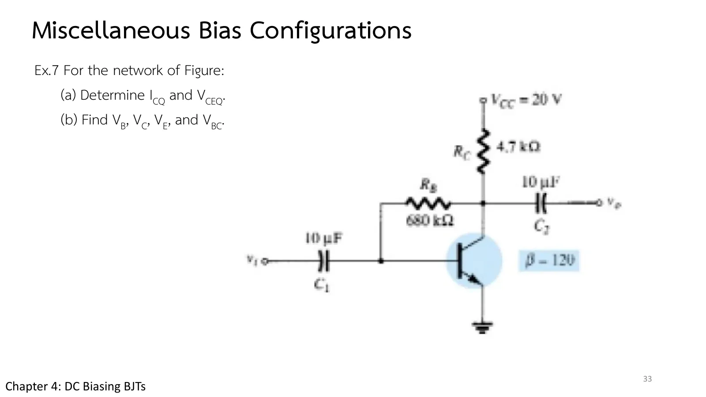
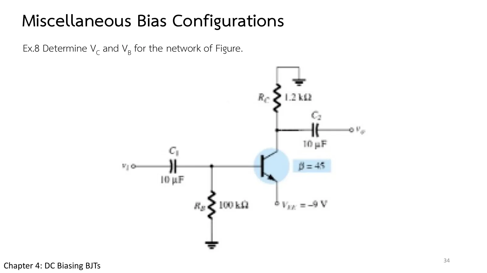
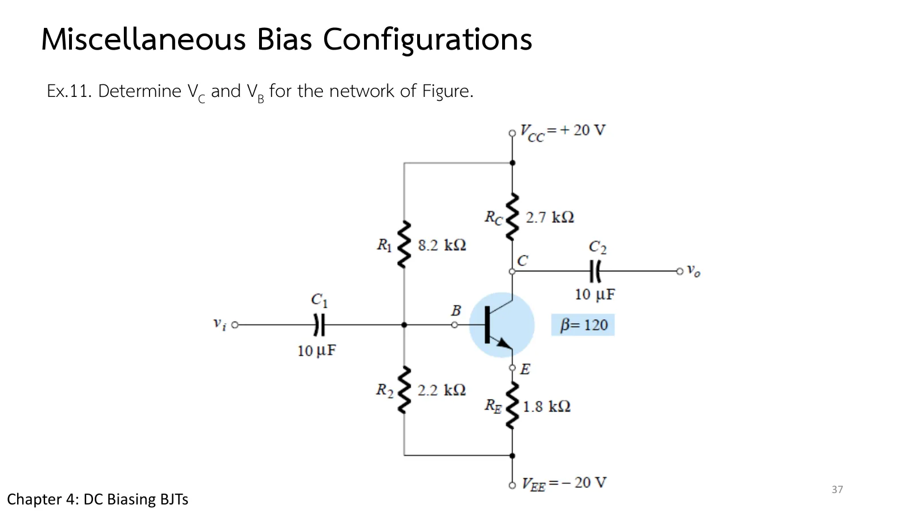

Where do you start when a bias circuit looks like none you have learned? This page has three of them: a feedback circuit with no \(R_E\), a circuit with its negative supply at the emitter, and a split-supply circuit. The answer is the same for all three: write Kirchhoff's voltage law round the loop through the 0.7 V base–emitter junction, get \(I_B\), and the rest follows. The simulation in section A shows the voltages round that loop for all three circuits summing to zero, followed by Ex.7, Ex.8, Ex.11, the summary table, and more practice (chapter 4 slides, pp. 33–34, 37; Boylestad sections 4.9–4.10).
The method: every circuit so far began with an equation for \(I_B\). Faced with a new one, try the same path: find the loop through the B–E junction, write the voltage law, substitute \(I_C = \beta I_B\), \(I_E = (\beta + 1)I_B\), and solve for \(I_B\) (book, section 4.9).
Ex.7: the feedback circuit without \(R_E\); Eq. 4.41 reduces to \(I_B = (V_{CC} - V_{BE})/(R_B + \beta R_C)\).
Ex.8: the supply is at the emitter (\(-V_{EE}\)) and \(R_C\) goes to ground; odd to look at, but the base loop \(-I_BR_B - V_{BE} + V_{EE} = 0\) is fixed bias itself. Every node voltage is negative.
Ex.11: the divider spans \(+V_{CC}\) to \(-V_{EE}\); after Thévenin, \(E_{Th}\) is negative, so mind the signs in the base loop.
Table 4.1 (the book's summary): fixed bias \(I_B = (V_{CC} - V_{BE})/R_B\) · emitter bias \(/(R_B + (\beta + 1)R_E)\) · voltage divider \((E_{Th} - V_{BE})/(R_{Th} + (\beta + 1)R_E)\) · collector feedback \(/(R_F + \beta(R_C + R_E))\) · emitter follower \((V_{EE} - V_{BE})/(R_B + (\beta + 1)R_E)\) · common base \(I_E = (V_{EE} - V_{BE})/R_E\); and \(V_{CE} = V_{CC} - I_C(R_C + R_E)\) for nearly all of them.
A
กฎแรงดันรอบวงเบส–อิมิตเตอร์ของทั้งสามวงจร
The voltage law round the base–emitter loop of all three circuits
Pick a circuit and read the voltage bars in the side panel: rises positive, drops negative, round the loop through the base–emitter junction; the sum must be zero (values from the solver). Below are the three terminal voltages to ground. The β buttons swap the transistor, to see which loop is sensitive to β.
Slide p. 33 is the collector-feedback circuit of page 4.4 with \(R_E\) removed (the emitter is grounded), and its feedback resistor is called \(R_B\) = 680 kΩ. No need to start over: put \(R_E\) = 0 into the equation of page 4.4 and \(I_B = (V_{CC} - V_{BE})/(R_B + \beta R_C)\) drops out.

สไลด์หน้า 33: Ex.7 · แตะรูปเพื่อขยายSlide p. 33: Ex.7 · tap to enlarge
\(V_{CC}\) = 20 V, \(R_C\) = 4.7 kΩ, \(R_B\) = 680 kΩ from collector to base, the emitter grounded, β = 120. (a) Determine \(I_{CQ}\) and \(V_{CEQ}\). (b) Find \(V_B\), \(V_C\), \(V_E\) and \(V_{BC}\).
ลองตอบก่อน
Try it first.
2
Ex.8: แหล่งจ่ายลบที่อิมิตเตอร์
Ex.8: a negative supply at the emitter
สไลด์หน้า 34 · Boylestad Example 4.19 (รูป 4.54)
Slide p. 34 · Boylestad Example 4.19 (Fig. 4.54)
สไลด์หน้า 34 ดูแปลกตา: \(R_C\) ต่อจากคอลเล็กเตอร์ขึ้นไปที่กราวด์ \(R_B\) ต่อจากเบสลงกราวด์ และแหล่งจ่ายเดียวคือ −9 V ที่อิมิตเตอร์ ลองเดินกฎแรงดันจากกราวด์ผ่าน \(R_B\) และรอยต่อลงไปถึง −9 V แล้วจะพบวงจรไบแอสคงที่ที่คุ้นเคย เพียงแต่แรงดันทุกขาติดลบ
Slide p. 34 looks odd: \(R_C\) runs from the collector up to ground, \(R_B\) from the base down to ground, and the only supply is −9 V at the emitter. Walk the voltage law from ground through \(R_B\) and the junction down to −9 V and you find the familiar fixed-bias circuit, only with every terminal voltage negative.

สไลด์หน้า 34: Ex.8 · แตะรูปเพื่อขยายSlide p. 34: Ex.8 · tap to enlarge
\(R_C\) = 1.2 kΩ from the collector up to ground, \(R_B\) = 100 kΩ from the base to ground, the emitter at \(V_{EE}\) = −9 V, β = 45. Determine \(V_C\) and \(V_B\).
ภาพจำลองวาดรางบนเป็นกราวด์และรางล่างเป็น −9 V ลองตอบก่อน
The simulation draws the top rail as ground and the bottom rail at −9 V. Try it first.
3
Ex.11: แหล่งจ่ายสองขั้วกับเทเวนิน
Ex.11: a split supply with Thévenin
สไลด์หน้า 37 · Boylestad Example 4.20 (รูป 4.55–4.58)
Slide p. 37 · Boylestad Example 4.20 (Figs. 4.55–4.58)
Slide p. 37 puts the voltage divider of page 4.3 across +20 V and −20 V: \(R_1\) = 8.2 kΩ up to \(V_{CC}\), \(R_2\) = 2.2 kΩ and \(R_E\) = 1.8 kΩ down to \(V_{EE}\). The four Thévenin steps still work, but \(E_{Th}\) comes out negative, so watch the signs in the base loop.

สไลด์หน้า 37: Ex.11 · แตะรูปเพื่อขยายSlide p. 37: Ex.11 · tap to enlarge
In section A pick Ex.8 and press β = 90: \(I_B\) does not change (no \(R_E\), and \(R_B\) goes to ground) but \(V_C\) drops to −9 V and the transistor saturates, because \(\beta I_BR_C\) = 9 V equals the supply.
Pick Ex.11 and switch β: the \(I_BR_{Th}\) bar is tiny and the loop voltages hardly change; Q is stable.
Try this 2 — signs
Problem 2: forget that the emitter sits at −9 V and take \(V_B\) = +0.7 V, and \(I_B\) comes out negative, which is impossible. Writing the loop from ground down to \(-V_{EE}\) avoids this.
Problem 3: \(E_{Th}\) = −11.53 V is negative, so in \(-E_{Th} - I_BR_{Th} - V_{BE} - I_ER_E + V_{EE} = 0\) it is +11.53 V to be taken off \(V_{EE}\) = 20 V.